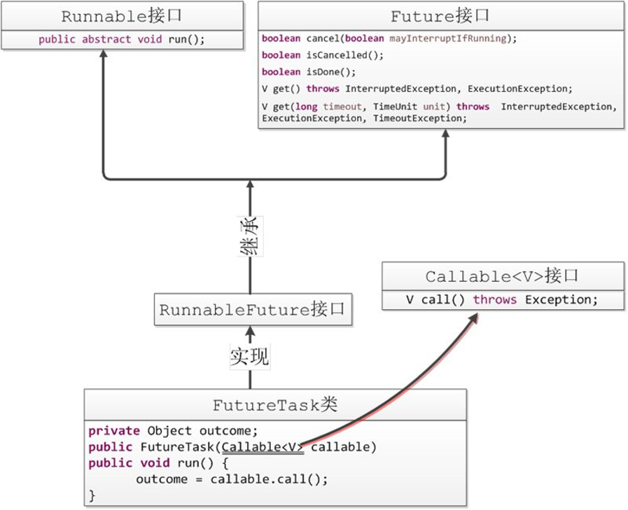

CountDownLatch，英文翻译为倒计时锁存器，是一个同步辅助类，在完成一组正在其他线程中执行的操作之前，它允许一个或多个线程一直等待。
闭锁可以延迟线程的进度直到其到达终止状态，闭锁可以用来确保某些活动直到其他活动都完成才继续执行：
CountDownLatch有一个正数计数器，countDown()方法对计数器做减操作，await()方法等待计数器达到0。所有await的线程都会阻塞直到计数器为0或者等待线程中断或者超时。
闭锁(倒计时锁)主要用来保证完成某个任务的先决条件满足。是一个同步工具类，用来协调多个线程之间的同步。这个工具通常用来控制线程等待，它可以让某一个线程等待直到倒计时结束，再开始执行。
①某一线程在开始运行前等待n个线程执行完毕。
将 CountDownLatch 的计数器初始化为n ：new CountDownLatch(n)，每当一个任务线程执行完毕，就将计数器减1 countdownlatch.countDown()，当计数器的值变为0时，在CountDownLatch上 await() 的线程就会被唤醒。一个典型应用场景就是启动一个服务时，主线程需要等待多个组件加载完毕，之后再继续执行。
②实现多个线程开始执行任务的最大并行性。
注意是并行性，不是并发，强调的是多个线程在某一时刻同时开始执行。类似于赛跑，将多个线程放到起点，等待发令枪响，然后同时开跑。做法是初始化一个共享的 CountDownLatch 对象，将其计数器初始化为 1 ：new CountDownLatch(1)，多个线程在开始执行任务前首先 coundownlatch.await()，当主线程调用 countDown() 时，计数器变为0，多个线程同时被唤醒。
如下例所示，在多线程运行的情况下，计算多线程耗费的时间：
public class TestCountDownLatch {
//CountDownLatch 为唯一的、共享的资源
static CountDownLatch countDownLatch = new CountDownLatch(5);
static class LatchDemo extends Thread{
@Override
public void run() {
int sum = 0;
for (int i = 0; i < 1000000; i++) {
sum++;
}
System.out.println(getName()+"计算结果："+sum);
countDownLatch.countDown();
}
}
public static void main(String[] args) throws InterruptedException {
long begin = System.currentTimeMillis();
System.out.println("开始了-----"+begin);
for (int i = 0; i < 5; i++) {
new LatchDemo().start();
}
countDownLatch.await();
long end = System.currentTimeMillis();
System.out.println("结束了-----"+end);
System.out.println("总共用时："+(end-begin));
}
}
/**
开始了-----1571144894551
Thread-3计算结果：1000000
Thread-0计算结果：1000000
Thread-1计算结果：1000000
Thread-2计算结果：1000000
Thread-4计算结果：1000000
结束了-----1571144894559
总共用时：8
*/ CyclicBarrier即栅栏类，与CountDownLatch类似。它能阻塞一组线程直到某个事件的发生。栅栏与闭锁的关键区别在于，所有的线程必须同时到达栅栏位置，才能继续执行。
CyclicBarrier可以使一定数量的线程反复地在栅栏位置处汇集。当线程到达栅栏位置时将调用await方法，这个方法将阻塞直到所有线程都到达栅栏位置。如果所有线程都到达栅栏位置，那么栅栏将打开，此时所有的线程都将被释放，而栅栏将被重置以便下次使用。
public CyclicBarrier(int parties) {
this(parties, null);
}
public CyclicBarrier(int parties, Runnable barrierAction) {
if (parties <= 0) throw new IllegalArgumentException();
this.parties = parties;
this.count = parties;
this.barrierCommand = barrierAction;
}CyclicBarrier默认的构造方法是CyclicBarrier(int parties)，其参数表示屏障拦截的线程数量，每个线程使用await()方法告诉CyclicBarrier我已经到达了屏障，然后当前线程被阻塞。
CyclicBarrier的另一个构造函数CyclicBarrier(int parties, Runnable barrierAction)，用于线程到达屏障时，优先执行barrierAction，方便处理更复杂的业务场景。
public class CyclicBarrierTest {
// 自定义工作线程
private static class Worker extends Thread {
private CyclicBarrier cyclicBarrier;
public Worker(CyclicBarrier cyclicBarrier) {
this.cyclicBarrier = cyclicBarrier;
}
@Override
public void run() {
super.run();
try {
System.out.println(Thread.currentThread().getName() + "开始等待其他线程");
cyclicBarrier.await();
System.out.println(Thread.currentThread().getName() + "开始执行");
// 工作线程开始处理，这里用Thread.sleep()来模拟业务处理
Thread.sleep(1000);
System.out.println(Thread.currentThread().getName() + "执行完毕");
} catch (Exception e) {
e.printStackTrace();
}
}
}
public static void main(String[] args) {
int threadCount = 3;
CyclicBarrier cyclicBarrier = new CyclicBarrier(threadCount);
for (int i = 0; i < threadCount; i++) {
System.out.println("创建工作线程" + i);
Worker worker = new Worker(cyclicBarrier);
worker.start();
}
}
}
/**
创建工作线程0
创建工作线程1
Thread-0开始等待其他线程
创建工作线程2
Thread-1开始等待其他线程
Thread-2开始等待其他线程
Thread-2开始执行
Thread-0开始执行
Thread-1开始执行
Thread-1执行完毕
Thread-0执行完毕
Thread-2执行完毕
*/ 在上述代码中，我们自定义的工作线程必须要等所有参与线程开始之后才可以执行，我们可以使用CyclicBarrier类来帮助我们完成。从程序的执行结果中也可以看出，所有的工作线程都运行await()方法之后都到达了栅栏位置，然后，3个工作线程才开始执行业务处理。
信号量(Semaphore)，又被称为信号灯，在多线程环境下用于协调各个线程, 以保证它们能够正确、合理的使用公共资源。信号量维护了一个许可集，我们在初始化Semaphore时需要为这个许可集传入一个数量值，该数量值代表同一时间能访问共享资源的线程数量。
线程可以通过acquire()方法获取到一个许可，然后对共享资源进行操作，注意如果许可集已分配完了，那么线程将进入等待状态，直到其他线程释放许可才有机会再获取许可，线程释放一个许可通过release()方法完成，"许可"将被归还给Semaphore。
public class TestSemaphore {
//初始化为1，互斥信号量
private final static Semaphore mutex = new Semaphore(1);
static class thread extends Thread{
@Override
public void run() {
try {
mutex.acquire();
System.out.println(getName()+"开始工作");
} catch (InterruptedException e) {
e.printStackTrace();
}finally {
//使用完成释放锁
mutex.release();
System.out.println("锁释放!!!");
}
}
}
public static void main(String[] args) {
for (int i = 0; i < 10; i++) {
new Thread(new thread(),String.valueOf(i)).start();
}
}
}
创建一个数量为1的互斥信号量Semaphore，然后并发执行10个线程，在线程中利用Semaphore控制线程的并发执行，因为信号量数值只有1，因此每次只能一条线程执行，其他线程进入等待状态。

Future接口，一般都是取回Callable执行的状态用的。其中的主要方法：